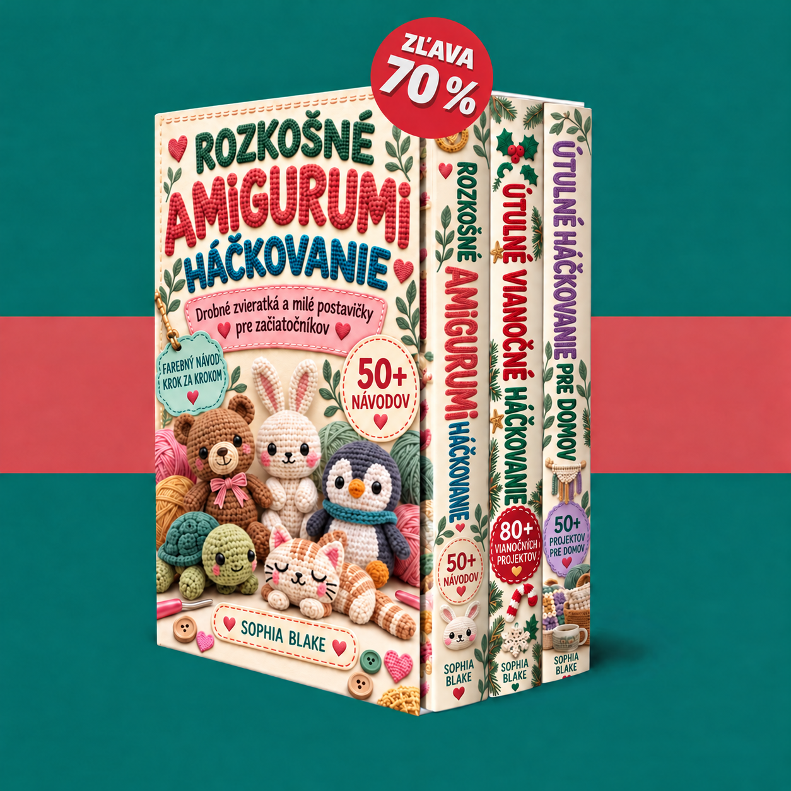

Vitaj vo svojej kolekcii. Prezri si tri knihy a začni malými zvieratkami, vianočnými ozdobami alebo útulnými projektmi do domácnosti.

Načítavajú sa knihy…
Zapni JavaScript, aby si mohol používať členskú zónu. PDF môžeš otvoriť aj cez odkazy nižšie.